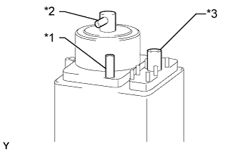

CANISTER > INSPECTION |
| 1. INSPECT CANISTER |
Visually check the canister for cracks or damage.
If cracks or damage is found, replace the canister.
|  |
Using SST, inspect the canister.
| Measurement Condition | Specified Condition |
| Ports B and C closed, vacuum applied to port A [1.96 kPa (15 mmHg, 0.579 in.Hg)] | No leak |
| Port C closed, vacuum applied to port A [1.96 kPa (15 mmHg, 0.579 in.Hg)] | Air flows from port B |
| Port C closed, air blow into port A [4.7 kPa (0.05 kgf/cm2, 0.7 psi)] | Air flows from port B |
| Air blow into port A [4.7 kPa (0.05 kgf/cm2, 0.7 psi)] | Air flows from both ports B and C |
| *1 | Port A |
| *2 | Port B |
| *3 | Port C |